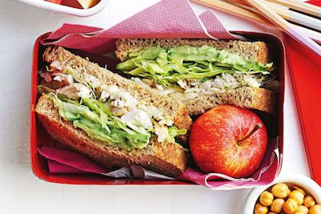

Description
This is a fairly simple yet satisfying quick meal sandwich. I typically have this for lunch breaks and honestly one is more than enough. I pair this sandwhich with some fruit and nuts on the side, it's the bomb dot com!

Ingredients
- 2 bread slices
- Pickle Slices
- Your faveorite type of sliced cheese
- Turkey slices or your favorite non-meat substitute
- Sour Cream
- Mustard
- Lettuce
- Tomato
Directions
- Make the sauce first: combine the mayo and mustard in a small mixing bowl until you get a light yellow. This sauce was introduced to me by Bobs Burgers famous burger: Chive my car.
- Spread the sauce over the slices of bread.
- Add pickles to the slices, I love pickles so I always have extra
- Add the lettuce, tomatoes and any other vegetables you enjoy with your sandwhiches
- Add your slice of cheese
- Put your choice of protein on top
- Close the sandwhich
Bon Appetite!